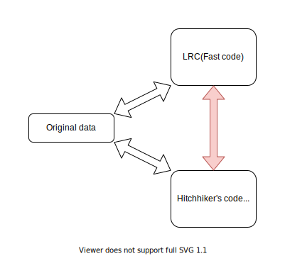

An Adaptive Erasure-Coded Storage Scheme with an Efficient Code-Switching Algorithm
Zizhong Wang¹ Haixia Wang¹ Airan Shao¹ Dongsheng Wang¹²
¹Tsinghua University ²Peng Cheng Laboratory
Reliability in Distributed Systems
-
Replication
-
Erasure Codes
-
High reliability with low storage overhead
-
Degraded reads are costly
Erasure codes
-
Eg: Reed Solomon code
-
(10,4) Reed Solomon code
-
Splits the data into 6 data shards and adds 4 parity shards
-
The original data can be generated from any 6 of the 10 shards.
-
Degraded read
-
When some shards are lost due to node failures
-
The lost shards are regenerated by bringing all shards to a node
Adaptive Erasure coding scheme
-
Different erasure codes have different storage overheads and degraded read latencies.
-
Uses the data access skew
-
Adaptive schemes use 2 codes: A fast code and a compact code
-
Data is stored in either of the two codes based on Hotness of the data (Frequency of access)
Adaptive Erasure coding scheme
-
Fast code for hot data
-
Fast degraded reads
-
Higher storage overhead compared to compact code
-
Compact code for cold data
-
Degraded reads slower than Fast code
-
Low storage overhead
Contribution of this paper

-
Adaptive erasure coded scheme is not the contribution of this paper
-
An efficient algorithm to switch between Local Reconstruction Code (fast) and Hitchhiker's code (compact)
Results
-
Evaluated on a Ceph cluster
-
Degraded read latency reduced by 57.1% compared to Reed Solomon
-
18.1% reduction in latency when LRC to HH
-
35.3% reduction in latency when HH to LRC